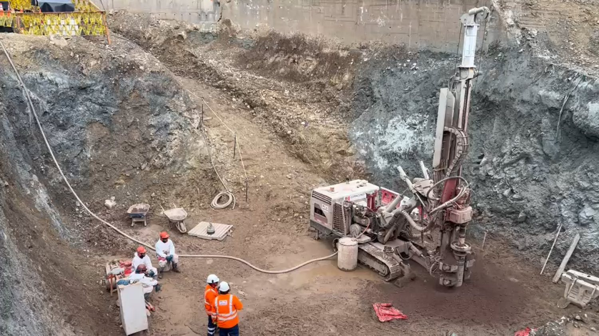

Veinte años sosteniendo el subsuelo de Lima.
Muros anclados, cimentaciones profundas y perforación diamantina. Diseñamos y ejecutamos cada corte por encima del factor de seguridad que exige la NTP E050.
Perforación de anclajes en talud
Obra en ejecución · Lima
Lo que sostiene la obra está debajo.
Cada excavación se resuelve nivel por nivel: perforación, inyección IRS a 5 Bar, tensado y verificación antes de bajar al siguiente sótano. Al costado, el corte tipo de una obra de seis sótanos.
perforados
profunda (m)
mínimo en obra
ejecutados
Constructoras que nos contratan
Nuestra experiencia asegura un proyecto exitoso.
Seguridad · Calidad · Compromiso · Ética · Responsabilidad
En GEOBUILDING SAC ofrecemos soluciones geotécnicas de alta calidad con un equipo de expertos altamente capacitados. Nuestro compromiso con la seguridad, la innovación y el cumplimiento normativo asegura resultados confiables y responsables en cada proyecto.
Participamos en la elaboración de la norma técnica nacional E050 y mantenemos una tasa de satisfacción del cliente superior al 95%. Cada obra se entrega con su ficha técnica: metros perforados, niveles de excavación, cargas de anclaje y factores de seguridad verificados.
Ingeniería que responde por su cálculo
Un equipo capacitado, procedimientos escritos y control en campo. Lo que se diseña es lo que se instala, y se verifica con ensayos de tracción en cada nivel de anclaje.
Seguridad del equipo y del entorno
Nos guiamos por la seguridad de nuestro personal y de los vecinos de obra, el compromiso con la calidad y una sólida ética en nuestras operaciones.
Más de 150 proyectos concluidos
Participación en la creación de la norma técnica nacional E050 y satisfacción del cliente por encima del 95% sostenida durante veinte años.
Cuatro frentes
bajo el nivel de calle.
Diseñamos y ejecutamos. El mismo equipo que modela la estabilidad del corte es el que dirige la perforación en obra, así que el criterio de cálculo no se pierde entre el gabinete y el terreno.
Estabilización de taludes
Protección superficial, drenaje, anclajes y elementos de contención para que el talud no se desmorone durante la obra.
Ver servicio → 02Cimentaciones profundas
Pilotes y muros pantalla apoyados en las capas de mayor capacidad portante, para estructuras de gran altura y peso.
Ver servicio → 03Perforación diamantina
Extracción de testigos de suelo y roca para logueo y ensayos: Lefranc, Lugeon, SPT y confirmatorias.
Ver servicio → 04Consultoría geotécnica
Mecánica de suelos aplicada: diseño de cimentaciones, excavaciones profundas, modelamiento geomecánico y control de asentamientos.
Ver servicio →Cada obra, a la profundidad
que realmente alcanzó.
Este es el perfil real de nuestras últimas dieciséis obras, dibujado a escala desde el nivel de calle. La barra más larga es Camino Real: nueve sótanos, 5,920 metros lineales de perforación y fondo de cimentación a −31.40 m.
Pasa el cursor sobre cualquier obra para ver su ficha.
Fuente: fichas técnicas de obra · GEOBUILDING SAC
Ver las 16 fichas →Así mejoramos
tu proyecto.
Experiencia y competencia en cada proyecto de construcción.
- ObraMás de 150 proyectos exitosos en ingeniería geotécnica, con ficha técnica verificable.
- EquipoPersonal capacitado y comprometido con la excelencia, del cálculo a la ejecución.
- EstándarSoluciones que superan los estándares de la industria en plazo y seguridad.
- NormaCumplimiento estricto de la NTP E050: FS ≥ 1.50 estático y ≥ 1.25 pseudoestático.
- ClienteMás del 95% de satisfacción entre las constructoras que nos contratan.
Solicita una llamada y
agenda una asesoría gratuita.
Cuéntanos la profundidad de excavación y el número de sótanos previstos. Con eso podemos adelantarte un rango de plazo y metodología en la primera llamada.